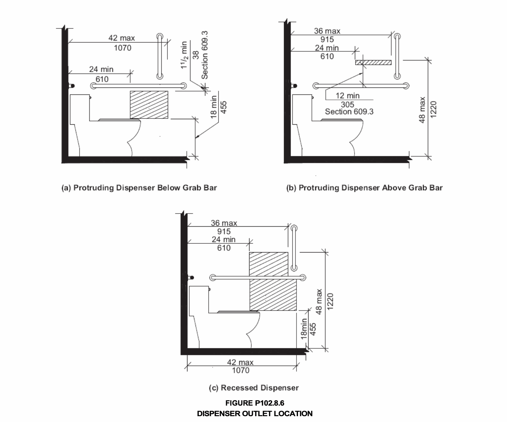

All toilet and bathing rooms within a dwelling unit or sleeping unit subject to Appendix P pursuant to Section 1107.2.2 shall comply with Section P102. Within each such toilet and bathing room, at least one lavatory, one water closet and either a bathtub or shower shall comply with Section P102; additional fixtures provided within such toilet and bathing room shall comply with Sections 1004.11.3.1.1 (Lavatory), 1004.11.3.1.2 (Water Closet), and 104.11.3.1.3 (Bathing Fixtures) of ICC A117.1. Toilet and bathing fixtures shall be in a single room, such that travel between fixtures does not require travel beyond the room in which the fixture(s) of such toilet or bathing room is located. In a room, containing only a lavatory and a water closet, such lavatory and water closet shall comply with Section P102.
Exception: When a shower compartment is not the only bathing facility, such shower compartment shall have dimensions of 36 inches (914 mm) minimum in width and 36 inches (914 mm) minimum in depth.
At least one accessible route shall connect all spaces and elements with each toilet and bathing room within a dwelling unit or sleeping unit unless as permitted in Section 1107.2.5, Condition 3. Accessible routes shall comply with ICC A117.1.
Lighting controls, electrical switches and receptacle outlets, and environmental controls shall comply with Section 309 of ICC A117.1.
Doors shall comply with Section 1107.2.1. Doors shall not swing into the clear floor or ground space or clearance for any fixture.
Exception: Doors may swing into the clear floor or ground space or clearances for fixtures where a clear floor or ground space complying with Section 305.3 of ICC A117.1 is provided within the room, beyond the arc of the door swing
Clear floor space at fixtures shall be permitted to include knee and toe clearances complying with Section 306 of ICC A117.1.
Clear floor or ground spaces and clearances are permitted to overlap.
Lavatories, including those within a toilet and bathing room accessed through a private office by a single occupant, shall comply with Section 606 of ICC A117.1.
Exception: Cabinetry shall be permitted under the lavatory, provided:
1. Such cabinetry can be removed without removal or replacement of the lavatory; and
2. The finish floor extends under such cabinetry; and
3. The walls behind and surrounding cabinetry are finished.
Mirrors above lavatories shall have the bottom edge of the reflecting surface 40 inches (1016 mm) maximum above the floor or ground. Medicine cabinets, if provided, must include a storage shelf no higher than 44 inches (1118 mm) above the floor.
Water closets shall comply with Section P102. 8.
The water closet shall be positioned with a wall to the rear and to one side. The centerline of the water closet shall be 18 inches (457 mm) from the side wall.
Clearance around the water closet shall comply with Sections P102.8.2.1 through P102.8.2.3.
Where only a parallel approach is provided to the water closet, the clearance shall be 56 inches (1422 mm) minimum, measured perpendicular from the rear wall, and 48 inches (1219 mm) minimum, measured perpendicular from the sidewall. A lavatory complying with Section P102.6 shall be permitted on the rear wall, 18 inches (457 mm) minimum from the water closet centerline.
Where only a forward approach is provided to the water closet, the clearance shall be 66 inches (1676 mm) minimum, measured perpendicular from the rear wall, and 48 inches (1219 mm) minimum, measured perpendicular from the side wall. A lavatory complying with Section P102.6 shall be permitted on the rear wall, 18 inches (457 mm) minimum from the water closet centerline.
Where both a parallel and a forward approach are provided to the water closet, the clearance shall be 56 inches (1420 mm) minimum, measured perpendicular from the rear wall, and 60 inches (1524 mm) minimum, measured perpendicular from the side wall. No fixtures or obstructions, other than the water closet, shall be within the clearance.
Grab bars for water closets shall comply with Section 609 of ICC A117.1 and shall be provided in accordance with Sections P102.8.3.1 through P102.8.3.2. Mounting heights of grab bars shall comply with Section 609.4 of ICC A117.1.
Exception: Grab bars are not required to be installed where reinforcement for such grab bars is installed and located to permit future installation of grab bars complying with Section P102.8.3.
Fixed side wall grab bars shall be 42 inches (1067 mm) minimum in length, located 12 inches (305 mm) maximum from the rear wall and extending 54 inches (1372 mm) minimum from the rear wall. In addition, a vertical grab bar 18 inches (457 mm) minimum in length shall be mounted with the bottom of the bar located between 39 inches (991 mm) and 41 inches (1041 mm) above the floor, and with the center of the bar located at 30 inches (762 mm) from the rear wall.
Exception: Where a side wall is not available for a 42-inch (1067 mm) grab bar, the sidewall grab bar shall be permitted to be 24 inches (610 mm) minimum in length, located 12 inches (305 mm) maximum from the rear wall.
. The rear wall grab bar shall be 36 inches (915 mm) minimum in length, and extend from the centerline of the water closet 12 inches (305 mm) minimum on the side closet to the wall, and 24 inches (610 mm) minimum on the transfer side.
Exception: Where wall space will not permit a grab bar 36 inches (915 mm) minimum in length, reinforcement for a rear wall grab bar 24 inches (610 mm) minimum in length centered on the water closet shall be provided.
The top of the toilet seat shall be 15 inches (381 mm) minimum and 19 inches (483 mm) maximum above the floor or ground.
Hand operated flush controls shall comply with Section 309 of ICC A117.1. Flush controls shall be located on the open side of the water closet.
Toilet paper dispensers shall comply with this section. Where the dispenser is located above the grab bar, the outlet of the dispenser shall be located within an area 24 inches (610 mm) minimum and 36 inches (915 mm) maximum from the rear wall. Where the dispenser is located below the grab bar, the outlet of the dispenser shall be located within an area 24 inches (610 mm) minimum and 42 inches (1065 mm) maximum from the rear wall. The outlet of the dispenser shall be located 18 inches (455 mm) minimum and 48 inches (1220 mm) maximum above the floor. Dispensers shall comply with Section 609.3 of ICC A117.1.

Where provided, a bathtub shall comply with Section P102.9.1, and a shower compartment shall comply with Section P102.9.2.
Bathtubs, including those within a toilet and bathing room accessed through a private office by a single occupant, shall comply with Section 607 of ICC A117.1. Lavatories complying with Section P102.6 shall be permitted in the clearance required by Section 607.2 of ICC A117.1. Bathtub seats shall not be required.
Exception: Where a hand shower in compliance with Section 607.6 of ICC A117.1 is not provided, the owner shall provide such a hand shower at the time a person with physical disabilities takes occupancy of the unit, or within 10 days of the date the request is made by a person with physical disabilities, whichever is later, at the owner’s expense.
Grab bars for bathtubs, including those within a toilet and bathing room accessed through a private office by a single occupant, shall comply with Section 609 of ICC A117.1 and shall be provided in accordance with Section 607.4 of ICC A117.1.
Exception: Grab bars are not required to be installed where reinforcement for such grab bars is installed and located to permit future installation of grab bars complying with Section P102.9.1.1.
Showers, including those within a toilet and bathing room accessed through a private office by a single occupant, shall comply with Section 608 of ICC A117.1.
Exceptions:
1. For showers other than transfer-type showers, counter tops and cabinetry shall be permitted at the control end of the clearance, provided such counter tops and cabinetry can be removed and the floor finish extends under such cabinetry.
2. Where a hand shower in compliance with Section 608.5 of ICC A117.1 is not provided pursuant to the exception in such section, the owner shall provide such a hand shower at the time a person with physical disabilities takes occupancy of the unit, or within 10 days of the date the request is made by a person with physical disabilities, whichever is later, at the owner’s expense.
Grab bars and seats for showers, including those within a toilet and bathing room accessed through a private office by a single occupant, shall comply with Sections 609 and 610 of ICC A117.1 and shall be provided in accordance with Sections 608.2.3 and 608.3 of ICC A117.1.
Exception: Grab bars and seats are not required to be installed where reinforcement for such grab bars and seats is installed and located to permit future installation of grab bars and seats complying with Section P102.9.2.1.
This section lists the standards that are referenced in various sections of this appendix. The standards are listed herein by the promulgating agency of the standard, the standard identification, the effective date and title and the section or sections of this document that reference the standard.
Refer to the rules of the department for any subsequent additions, modifications or deletions that may have been made to these standards in accordance with Section 28-103.19 of the Administrative Code.
The application of the referenced standards shall be as specified in Section 102.4.
ICC A117.1-2009 Accessible and Usable P102.1, et. al Buildings and Facilities